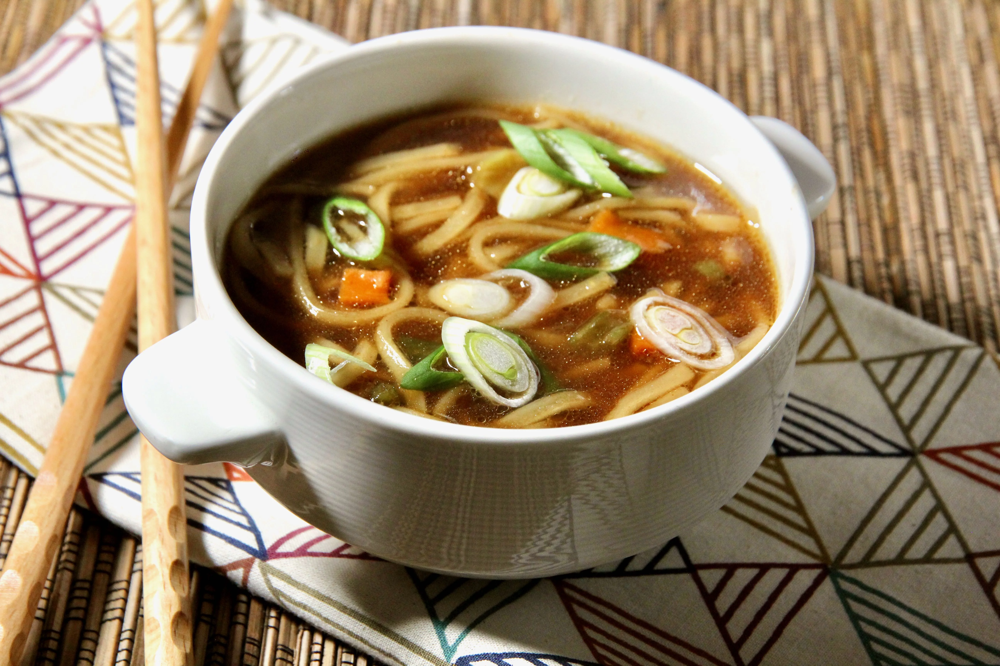

Ramen noodle soup

Simple,easy ramen noodle soup
2 Servings
- 3 ½ cups vegetable broth
- 1 (3.5 ounce) package ramen noodles with dried vegetables
- ½ tablespoon and ½ teaspoon soy sauce
- ½ teaspoon chili oil
- ½ teaspoon minced fresh ginger root
- 1 teaspoons sesame oil
- 2 green onions, sliced
Steps
- In a medium saucepan combine broth and noodles. Cover and bring to a boil over high heat; stir to break up noodles. Reduce heat to medium and add soy sauce, chili oil and ginger. Simmer, uncovered, for 10 minutes. Stir in sesame oil and garnish with green onions.